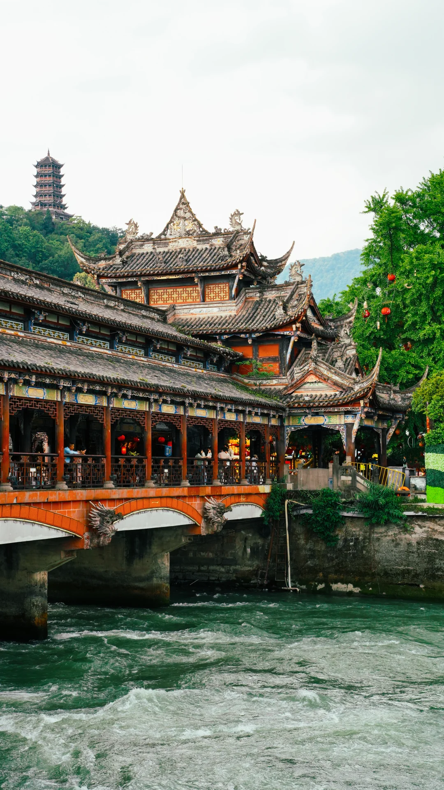
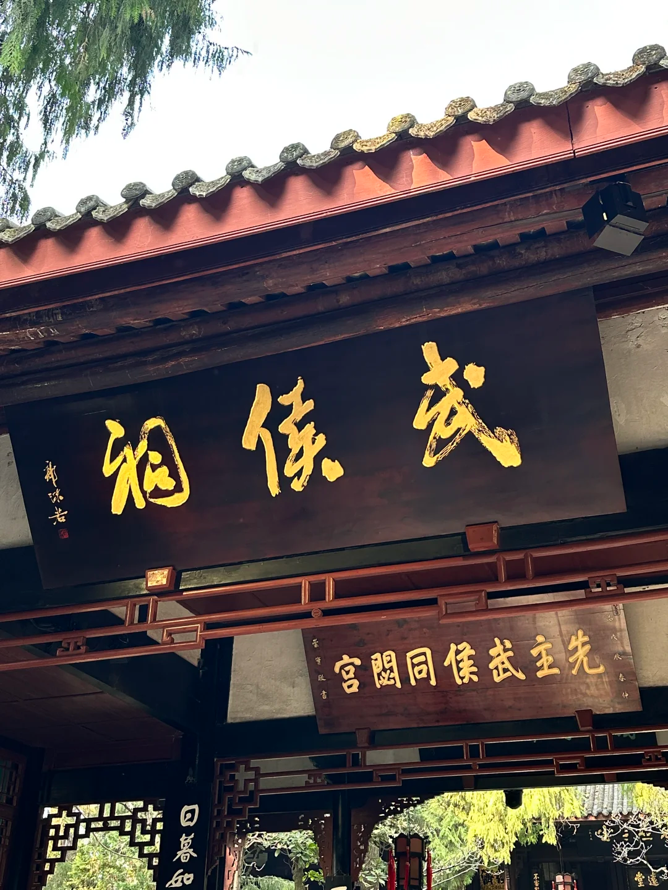
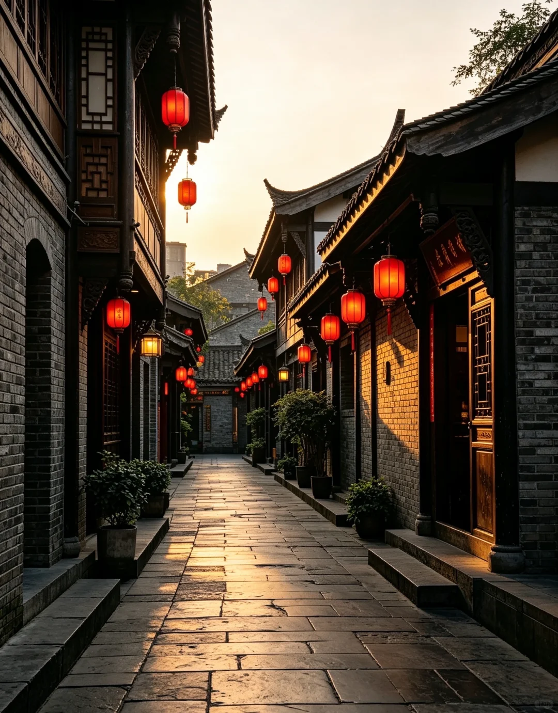
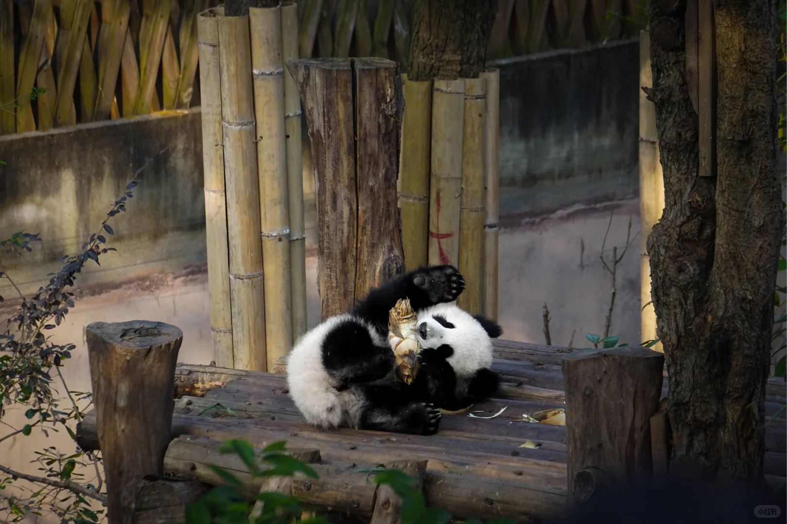
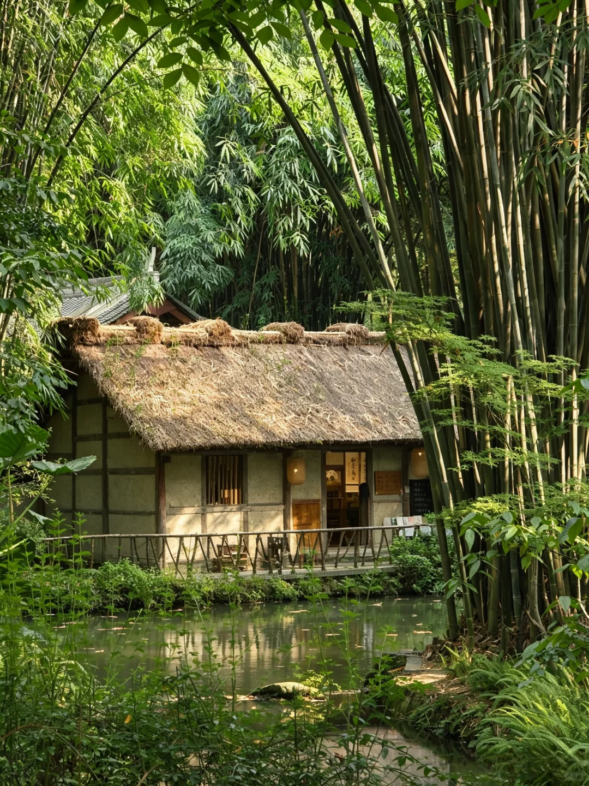
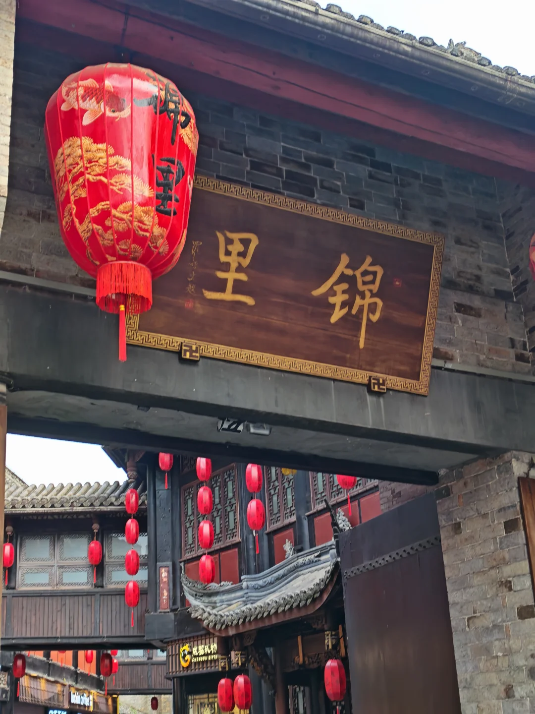

成都景点
成都既有千年历史的文化古迹，也有风光旖旎的自然胜景， 更有憨态可掬的国宝大熊猫，每一处都值得您驻足流连。

都江堰
世界文化遗产，两千余年仍在运转的水利奇迹，见证了古蜀先民的非凡智慧与创造力。

武侯祠
中国唯一君臣合祀祠庙，纪念诸葛亮与刘备，红墙翠柏间流淌着三国文化的千古风韵。

宽窄巷子
由宽巷子、窄巷子、井巷子组成的历史文化街区，青砖黛瓦中感受老成都的院落生活。

大熊猫基地
全球最大的大熊猫繁育研究机构，近距离观赏可爱的国宝，了解熊猫保护与科研工作。

杜甫草堂
诗圣杜甫流寓成都时的故居，茅屋竹林间感受"安得广厦千万间"的家国情怀。

锦里古街
紧邻武侯祠的仿古商业街，夜幕降临时灯笼高挂，再现了蜀汉时期的繁华市井景象。